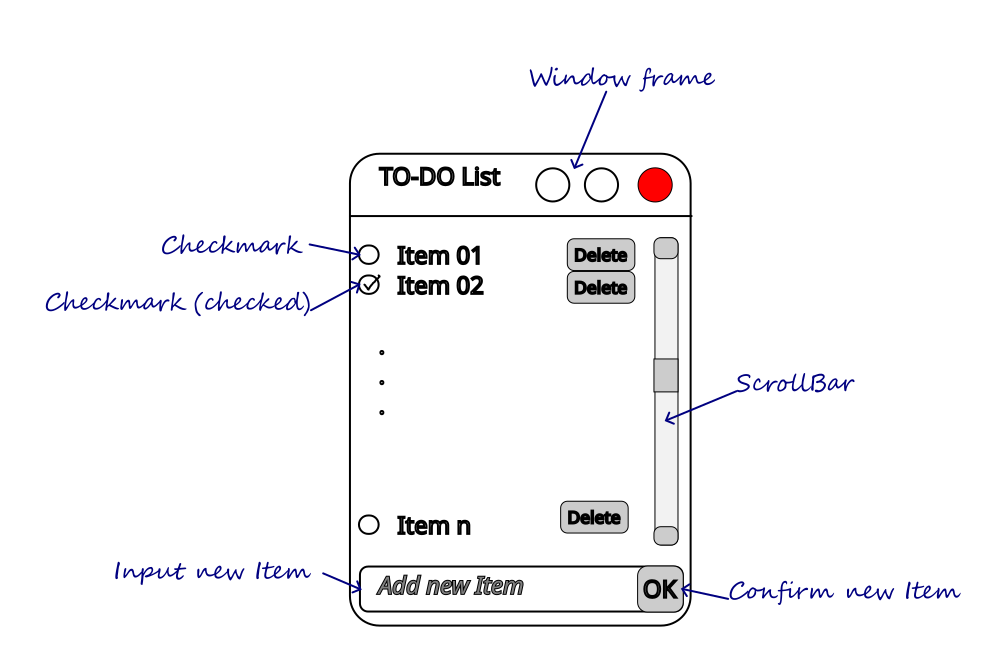
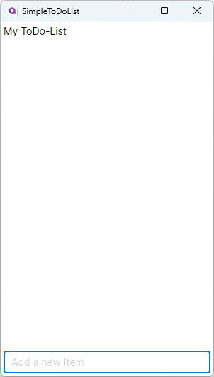
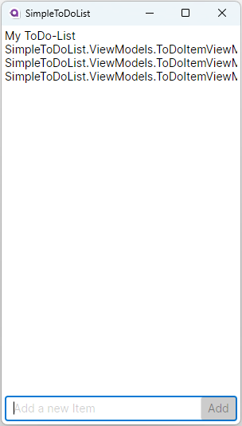
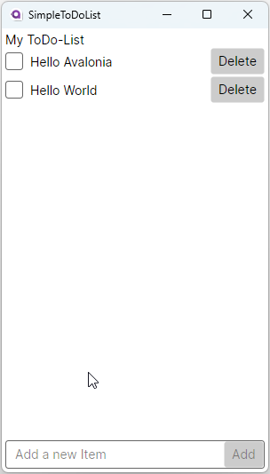
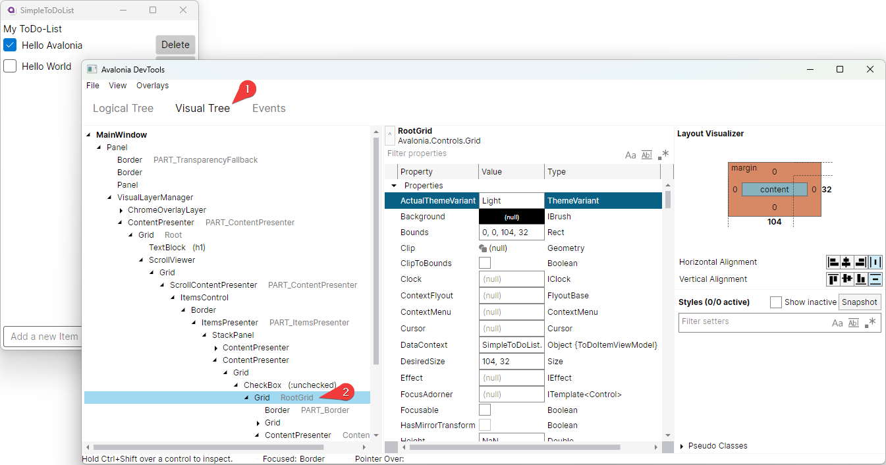
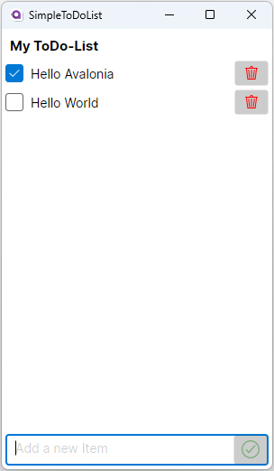

This example will show you how a simple ToDo-List App can be built using Avalonia in combination with the MVVM-Community-Toolkit.
Difficulty
🐥 Easy 🐥
Buzz-Words
ToDo-List, complete app, MVVM, CommunityToolkit.MVVM, source generator, styles, commands
Before we start
This sample assumes that you have basic knowledge about the following topics:
-
How to create a [new Avalonia project]
-
Some basics about C# and [XAML]
-
What the [MVVM -pattern] (Model-View-ViewModel) is and how it works
-
What a [Command] is and how it works
-
What a [ObservableCollection] is and how it works
| Some sections are optional. You can skip these if you want to. |
CommunityToolkit.MVVM
The [CommunityToolkit.MVVM]-package is one of many third-party packages for MVVM-Apps. We will use it in this sample as it is very lightweight. In addition, it comes with built-in source generators, which allow us to write less boilerplate code.
|
For example, we can annotate private fields or partial properties with the |
Preparation work
Before we start with the actual implementation of the App, we need to define a list of requirements and a sketch of the UI.
Must-Haves
-
The user must be able to view a list of to-do items
-
All items must be easily discoverable
-
The user must be able to check and uncheck the to-do items
-
The user must be able to add new items
-
The user must be able to delete an existing item
Nice-To-Haves
-
The user should have visual feedback when hovering a to-do item
-
The user should have visual feedback if a new item can be added or not
-
The user should be able to save and load a to-do-list (not a scope of this tutorial)
-
The user should be able to edit an existing item (not a scope of this tutorial)
Draft UI Layout
It would be nice to have a single-page user interface (UI) where the user can interact with the to-do list. We will use the operating system’s window frame to present our App. In the bottom of the page, the user will have a TextBox where they can type any new item content to add. A PlaceholderText or ToolTip shall indicate that visually. As soon as we receive valid input for a new item, a Button next to the input field should be enabled. If the user invokes this Button, the new item will be added into our list. The list itself will fill the available space. In case the space is not enough to render all items, a ScrollBar will enable vertical scrolling.
Each item in the list is going to be represented by a CheckBox followed by the content and a Button to delete the item.

The Solution
| In this sample we will use the MVVM (Model-View-ViewModel) approach, where we will start with the Model and ViewModel first. |
Step 1: Create and set up a new project
Choose your favorite IDE to create a new Avalonia-MVVM project.
| Depending on the IDE used to create your project, you may see a file structure that differs from the one seen in this tutorial. |
When you create a new project from the IDE you can choose the MVVM package you prefer. If you didn’t choose the CommunityToolkit.MVVM-package, you may need to install CommunityToolkit.MVVM via NuGet to be able to use the source generators in this tutorial.
|
Step 2: Set up the Model
| In our case we need the model for I/O operations. If you have no use for the model in your own App, feel free to skip that part. |
In case the folder Models is missing on your side, just add it to your project.
|
The Model will be quite simple in our case. We want to have one class called ToDoItem, which has two Properties. This model will also be used to save and restore the users ToDo-List later on. Inside the folder Models, add a new class called ToDoItem:
/// <summary>
/// This is our Model for a simple ToDoItem.
/// </summary>
public class ToDoItem
{
/// <summary>
/// Gets or sets the checked status of each item
/// </summary>
public bool IsChecked { get; set; }
/// <summary>
/// Gets or sets the content of the to-do item
/// </summary>
public string? Content { get; set; }
}Step 3: Set up the ViewModel
The ToDoItem-ViewModel
Our next task is to create a ViewModel for our to-do-items, which we will use as an intermediate layer between the View and the Model. Inside the folder ViewModels add a new class ToDoItemViewModel which inherits ViewModelBase.
If you want to use the source generators, remember to mark the class as partial.
|
/// <summary>
/// This is a ViewModel which represents a <see cref="Models.ToDoItem"/>
/// </summary>
public partial class ToDoItemViewModel : ViewModelBase
{
/// <summary>
/// Gets or sets the checked status of each item
/// </summary>
[ObservableProperty]
public partial bool _isChecked;
/// <summary>
/// Gets or sets the content of the to-do item
/// </summary>
[ObservableProperty]
public partial string? _content;
}Our ViewModel is not yet connected to our Model. To create a new ToDoItemViewModel from an existing ToDoItem, we can add a constructor that takes the ToDoItem as an argument.
We also want to be able to create a new, empty ToDoItemViewModel. Therefore, we also add a parameterless constructor.
|
/// <summary>
/// Creates a new blank ToDoItemViewModel
/// </summary>
public ToDoItemViewModel()
{
// empty
}
/// <summary>
/// Creates a new ToDoItemViewModel for the given <see cref="Models.ToDoItem"/>
/// </summary>
/// <param name="item">The item to load</param>
public ToDoItemViewModel(ToDoItem item)
{
// Init the properties with the given values
IsChecked = item.IsChecked;
Content = item.Content;
}Okay, now we also need a way to get the updated Model back, if the user made some changes. We can do this, for example, using a read-only property or a method like shown below:
/// <summary>
/// Gets a ToDoItem of this ViewModel
/// </summary>
/// <returns>The ToDoItem</returns>
public ToDoItem GetToDoItem()
{
return new ToDoItem()
{
IsChecked = this.IsChecked,
Content = this.Content
};
}The MainViewModel
Depending on the template used to create the project you should see a file called MainViewModel or MainWindowViewModel. Open this file to edit it.
If you see a property called Greetings, feel free to delete it as we don’t need that in our App.
|
Let’s add an ObservableCollection called ToDoItems. As the collection will notify the UI whenever an item was added or removed, we can make this property readonly. Thus, a getter is enough here.
/// <summary>
/// Gets a collection of <see cref="ToDoItem"/> which allows adding and removing items
/// </summary>
public ObservableCollection<ToDoItemViewModel> ToDoItems { get; } = new ObservableCollection<ToDoItemViewModel>();Well, now we have a collection of ToDoItems but how can we add new items to it? In our case this is quite simple as we only expect a non-empty string as content to construct a new item. We will add a helper property called NewItemContent. If that string is not empty, a command called AddItemCommand will be enabled.
The command and the properties will be created using the source generator provided by the MVVM-toolkit we use. Remember to make the MainViewModel partial.
|
/// <summary>
/// Gets or set the content for new Items to add. If this string is not empty, the AddItemCommand will be enabled automatically
/// </summary>
[ObservableProperty]
[NotifyCanExecuteChangedFor(nameof(AddItemCommand))] // This attribute will invalidate the command each time this property changes
public partial string? NewItemContent { get; set; }Next step is to create a method or a property that returns a bool indicating whether the AddItemCommand can execute:
/// <summary>
/// Returns if a new Item can be added. We require to have the NewItem some Text
/// </summary>
private bool CanAddItem() => !string.IsNullOrWhiteSpace(NewItemContent);Last but not least we can add the Command. If we annotate a void or a Task with the [RelayCommand-attribute], a new RelayCommand will be generated for us. In our case we use a void called AddItem which will add a new item into ToDoItems-collection. After that we want to reset the NewItemContent, so that the input field is cleared for the next item to be added.
/// <summary>
/// This command is used to add a new Item to the List
/// </summary>
[RelayCommand (CanExecute = nameof(CanAddItem))]
private void AddItem()
{
// Add a new item to the list
ToDoItems.Add(new ToDoItemViewModel() {Content = NewItemContent});
// reset the NewItemContent
NewItemContent = null;
}Adding items is possible now, but we also want to be able to remove items. So we will add another Command for that. However, we need to know which item to remove. So we will pass the item to remove as a CommandParameter.
According to our App draft, we want to add the Delete-Button next to each item. Therefore, we can be sure that always a valid CommandParameter is sent to the Command. Therefore, we don’t need to set CanExecute in this case.
|
/// <summary>
/// Removes the given Item from the list
/// </summary>
/// <param name="item">the item to remove</param>
[RelayCommand]
private void RemoveItem(ToDoItemViewModel item)
{
// Remove the given item from the list
ToDoItems.Remove(item);
}Step 4: Set up the View
Depending on the template you used to create your project, you may see a file called MainView alongside MainWindow. In this case, please use MainView to add the content shown below. MainWindow will present this view for you.
|
Let’s recall the App-design we planned:
As shown above, we need a header at the top, a presentation of the items in the middle (which takes as much space as possible) and a footer with an input-field for adding new items. In Avalonia we use [Panels] to achieve different layouts. In our case we can use a DockPanel or a Grid. We will use a Grid as this offers the most flexible layout.
|
A |
You can set Grid.Row and Grid.Column-attached properties on every child control to define the exact cell where the control should be shown.
|
Here is our basic layout:
<!-- Leave the root-Node untouched beside setting Width, Height and Padding -->
<Window xmlns="https://github.com/avaloniaui"
xmlns:x="http://schemas.microsoft.com/winfx/2006/xaml"
xmlns:vm="using:SimpleToDoList.ViewModels"
xmlns:d="http://schemas.microsoft.com/expression/blend/2008"
xmlns:mc="http://schemas.openxmlformats.org/markup-compatibility/2006"
mc:Ignorable="d"
Width="300" Height="500" Padding="4"
x:Class="SimpleToDoList.Views.MainWindow"
x:DataType="vm:MainViewModel"
Icon="/Assets/avalonia-logo.ico"
Title="SimpleToDoList">
<!-- We give a name to the root grid in order to access it later -->
<Grid RowDefinitions="Auto, *, Auto"
x:Name="Root">
<!-- This is our title text block. -->
<TextBlock Text="My ToDo-List" />
<ScrollViewer Grid.Row="1">
<!-- This ItemsControl show all added ToDoItems. -->
<!-- It needs to be placed inside a ScrollViewer because other than a ListBox it has not its own -->
<ItemsControl ItemsSource="{Binding ToDoItems}">
</ItemsControl>
</ScrollViewer>
<!-- This TextBox can be used to add new ToDoItems -->
<TextBox Grid.Row="2"
Text="{Binding NewItemContent}"
PlaceholderText="Add a new Item">
</TextBox>
</Grid>
</Window>We are now good to go and run our App for the first time. You should see something similar to this:

We can see the title TextBlock is there and also the entry field for new items to add. We can add some text into the TextBox, however we have no button to add it into our list yet. Let’s fix that.
In Avalonia a TextBox can add InnerLeftContent and InnerRightContent, which can be used to add any content you like. For example, we can add a button to it. The Button will execute the AddItemCommand. For convenience, we also want to allow adding items using the keyboard. That is what [KeyBindings and HotKeys] can be used for.
We use KeyBindings here as a HotKey would be available for the whole view, where we want it only to work when the TextBox is focused.
|
Here is what our modified input box looks like:
<TextBox Grid.Row="2"
Text="{Binding NewItemContent}"
PlaceholderText="Add a new Item">
<TextBox.InnerRightContent>
<Button Command="{Binding AddItemCommand}" >
Add
<!-- <PathIcon Data="{DynamicResource AcceptIconData}" Foreground="Green" /> -->
</Button>
</TextBox.InnerRightContent>
<!-- KeyBindings allow us to define keyboard gestures -->
<TextBox.KeyBindings>
<KeyBinding Command="{Binding AddItemCommand}" Gesture="Enter" />
</TextBox.KeyBindings>
</TextBox>Now, if you run your App again, you will notice that we have a Button which is grayed out if the input field is empty and gets enabled as soon as you start typing. Invoking the Button will add a new item to our list above.

Great, we can add new items to our list. However, they don’t display themselves as we wanted them to. Instead of showing the content, we see the name of the ItemViewModel. We can fix that by defining the ItemTemplate for the ItemsControl.
If you want to learn more about DataTemplates, see these samples: [DataTemplate-Samples]
|
Our DataTemplate uses a CheckBox where the Content is bound to ToDoItemViewModel.Content and IsChecked is bound to ToDoItemViewModel.IsChecked. Next to it, we will add a Button which is there to delete the given item. The Command is bound to the MainViewModel.DeleteCommand and the CommandParameter is the ToDoItemViewModel itself.
Inside the ItemTemplate we can only use members of our ItemViewModel. However, the DeleteCommand is part of our MainViewModel. We can access this by accessing the parents or named controls DataContext. As we use compiled bindings, we have to [cast the DataContext]
|
<ItemsControl ItemsSource="{Binding ToDoItems}">
<ItemsControl.ItemTemplate>
<!-- The ItemTemplate defines how each item should be represented -->
<!-- Our Item will be represented by a CheckBox and a Delete-Button -->
<DataTemplate DataType="vm:ToDoItemViewModel">
<Grid ColumnDefinitions="*, Auto">
<CheckBox Content="{Binding Content}"
IsChecked="{Binding IsChecked}" />
<!-- Note how we use the Root-Grid to get the MainViewModel here. As we use compiled bindings we have to cast the DataContext -->
<Button Command="{Binding #Root.((vm:MainViewModel)DataContext).RemoveItemCommand}"
CommandParameter="{Binding .}"
Grid.Column="1">
Delete
</Button>
</Grid>
</DataTemplate>
</ItemsControl.ItemTemplate>
</ItemsControl>If we now run the App once again, we will see that the items are now displayed as intended. Moreover, we can now check and uncheck them as well as delete them.

Step 5 (Optional): Add some Styles to improve the UI
While our App is now fully functional, and we are done with all must-haves, we can still improve the user experience. The following parts of our UI are not really user-friendly:
-
The Title looks exactly as any other content, this should be improved
-
The Buttons have English-only content. Having symbols would make them more understandable for all folks.
-
It would be nice if the item that the pointer is over were highlighted. This would help the user to click the intended item.
For the header text we can use [Style.Classes].
In App.axaml add the following Style:
<Application.Styles>
<!-- Do not touch this -->
<FluentTheme />
<!-- Some custom Styles -->
<!-- Our header Style -->
<Style Selector="TextBlock.h1">
<Setter Property="FontWeight" Value="Bold" />
<Setter Property="FontSize" Value="15" />
<Setter Property="Margin" Value="5" />
</Style>
</Application.Styles>Usage:
<!-- This is our title text block. We use Style.Classes to style it accordingly -->
<TextBlock Classes="h1" Text="My ToDo-List" />For the CheckBox we want to add two different Styles. One that applies to each CheckBox and sets the HorizontalAlignment to fill the entire available space and another one that sets a highlight color to it’s background on pointer-over.
| Avalonia has pseudo-class selectors that can be used to style a control according to its visual state. See [docs] for more info. |
|
Sometimes you need to apply a style to a visual child of the control template (see [docs]). To understand which selector to use, you may use [developer tools]. Moreover, you can look up the original styles on [GitHub in source] Press  Figure 6: DevTools in action
|
Instead of hard-coding colors and brushes, you can use [DynamicResources] which will make sure style follows the overall App-design. To explore the available ones from FluentTheme, look them up on [GitHub in source]
|
<Application.Styles>
<!-- ... other styles ... -->
<!-- We want our CheckBox to be stretched horizontally (the default is left-aligned) -->
<Style Selector="CheckBox">
<Setter Property="HorizontalAlignment" Value="Stretch" />
</Style>
<!-- These styles add some useful feedback for the user -->
<Style Selector="CheckBox:pointerover /template/ Grid#RootGrid">
<Setter Property="Background" Value="{DynamicResource SystemAccentColorLight3}" />
</Style>
</Application.Styles>To display icons we can use PathIcon which accepts any path-data. This data can be taken from a svg-file.
| If you use an icon from one of several online available icon galleries, make sure the license suits your needs. |
<Application.Resources>
<!-- These are re-usable Icon data. You can get the path data from svg-files for example -->
<StreamGeometry x:Key="DeleteIconData">The path data</StreamGeometry>
<StreamGeometry x:Key="AcceptIconData">The path data</StreamGeometry>
</Application.Resources>To display the icons in our App we add them as our Buttons content:
<!-- The same applies for the Delete-Button -->
<Button Command="{Binding AddItemCommand}">
<PathIcon Data="{DynamicResource AcceptIconData}" Foreground="Green" />
</Button>We want our icons to become semi-transparent if a Button is disabled. We can use yet another Style for that:
<Application.Styles>
<!-- ... -->
<!-- This style will make the icon semi-transparent, if a button is disabled -->
<Style Selector="Button:disabled PathIcon">
<Setter Property="Opacity" Value="0.4" />
</Style>
</Application.Styles>And here is the final result:

Step 7 (Optional): Data Persistence
| We will be storing the data as a [JSON-File]. You can apply the same approach to any other file-format you prefer. |
Right now every time we close the App, all data is lost. For a simple demo that is all fine, but what if we wanted to start using this App for our daily to-do’s? Well, we can add basic data persistence as we already made sure our Model is able to handle that. For the actual file-operations we will use a helper class which is used as a service. So add a folder called Services and inside a new class called ToDoListFileService.cs.
We can make this class static in our case. In a more complex App this may better be handled using [Dependency Injection]
|
| We use a hard-coded filename here. This may not be the perfect solution, as the path may vary by user settings or platform limitations. However, this is not a part we want to cover in this sample |
This is how we can save a list of Todo-Items:
using System;
using System.Collections.Generic;
using System.IO;
using System.Text.Json;
using System.Threading.Tasks;
using SimpleToDoList.Models;
public static class ToDoListFileService
{
// This is a hard coded path to the file. It may not be available on every platform. In your real world App you may
// want to make this configurable
private static string _jsonFileName =
Path.Combine(Environment.GetFolderPath(Environment.SpecialFolder.ApplicationData),
"Avalonia.SimpleToDoList", "MyToDoList.txt");
/// <summary>
/// Stores the given items into a file on disc
/// </summary>
/// <param name="itemsToSave">The items to save</param>
public static async Task SaveToFileAsync(IEnumerable<ToDoItem> itemsToSave)
{
// Ensure all directories exists
Directory.CreateDirectory(Path.GetDirectoryName(_jsonFileName)!);
// We use a FileStream to write all items to disc
using (var fs = File.Create(_jsonFileName))
{
await JsonSerializer.SerializeAsync(fs, itemsToSave);
}
}
}To actually save the file, we need a way to call the SaveToFileAsync-method when the App is terminating. As we only target Desktop, we can do so in an event called ShutdownRequested. Moreover, we need a reference to the MainViewModel to be accessible form the event, and thus we store it in a private field instead of creating in inline.
// This is a reference to our MainViewModel which we use to save the list on shutdown. You can also use Dependency Injection
// in your App.
private readonly MainViewModel _mainViewModel = new MainViewModel();
public override void OnFrameworkInitializationCompleted()
{
if (ApplicationLifetime is IClassicDesktopStyleApplicationLifetime desktop)
{
desktop.MainWindow = new MainWindow
{
DataContext = _mainViewModel // Remember to change this line to use our private reference to the MainViewModel
};
// Listen to the ShutdownRequested-event
desktop.ShutdownRequested += DesktopOnShutdownRequested;
}
base.OnFrameworkInitializationCompleted();
}In the event itself we cancel the event as long as _canClose is not set to true.
It is highly recommended to run I/O-operations [async].
|
// We want to save our ToDoList before we actually shutdown the App. As File I/O is async, we need to wait until file is closed
// before we can actually close this window
private bool _canClose; // This flag is used to check if window is allowed to close
private async void DesktopOnShutdownRequested(object? sender, ShutdownRequestedEventArgs e)
{
e.Cancel = !_canClose; // cancel closing event first time
if (!_canClose)
{
// To save the items, we map them to the ToDoItem-Model which is better suited for I/O operations
var itemsToSave = _mainViewModel.ToDoItems.Select(item => item.GetToDoItem());
await ToDoListFileService.SaveToFileAsync(itemsToSave);
// Set _canClose to true and Close this Window again
_canClose = true;
if (ApplicationLifetime is IClassicDesktopStyleApplicationLifetime desktop)
{
desktop.Shutdown();
}
}
}If you run the App, add some items and close it, you should see a new file in %APPDATA%\Avalonia.SimpleToDoList called MyToDoList.txt with a content similar to this:
[
{
"Content": "Hello Avalonia",
"IsChecked": true
},
{
"Content": "Hello World",
"IsChecked": false
}
]Loading the stored file can also be done in a similar way:
public static class ToDoListFileService
{
// ...
/// <summary>
/// Loads the file from disc and returns the items stored inside
/// </summary>
/// <returns>An IEnumerable of items loaded or null in case the file was not found</returns>
public static async Task<IEnumerable<ToDoItem>?> LoadFromFileAsync()
{
try
{
// We try to read the saved file and return the ToDoItemsList if successful
using (var fs = File.OpenRead(_jsonFileName))
{
return await JsonSerializer.DeserializeAsync<IEnumerable<ToDoItem>>(fs);
}
}
catch (Exception e) when (e is FileNotFoundException || e is DirectoryNotFoundException)
{
// In case the file was not found, we simply return null
return null;
}
}
}public override async void OnFrameworkInitializationCompleted()
{
// ...
// Init the MainViewModel
await InitMainViewModelAsync();
}
// Optional: Load data from disc
private async Task InitMainViewModelAsync()
{
// get the items to load
var itemsLoaded = await ToDoListFileService.LoadFromFileAsync();
if (itemsLoaded is not null)
{
foreach (var item in itemsLoaded)
{
_mainViewModel.ToDoItems.Add(new ToDoItemViewModel(item));
}
}
}Related
If you want to explore more samples, please also visit https://github.com/AvaloniaCommunity/awesome-avalonia.